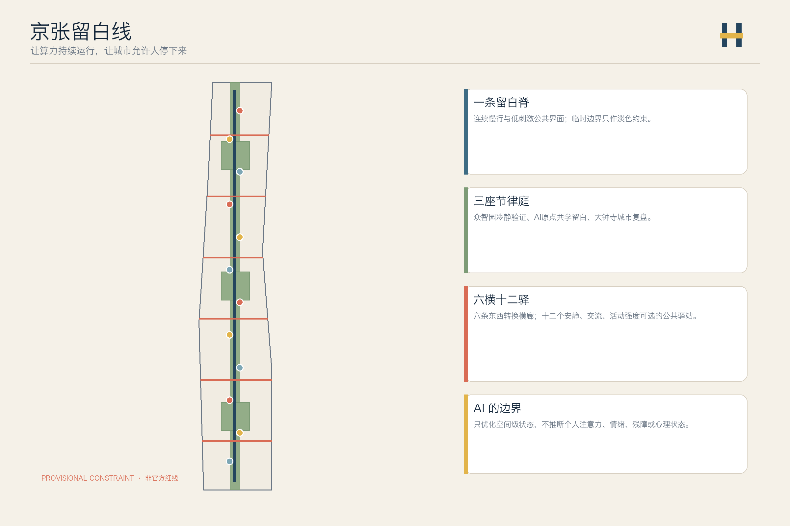
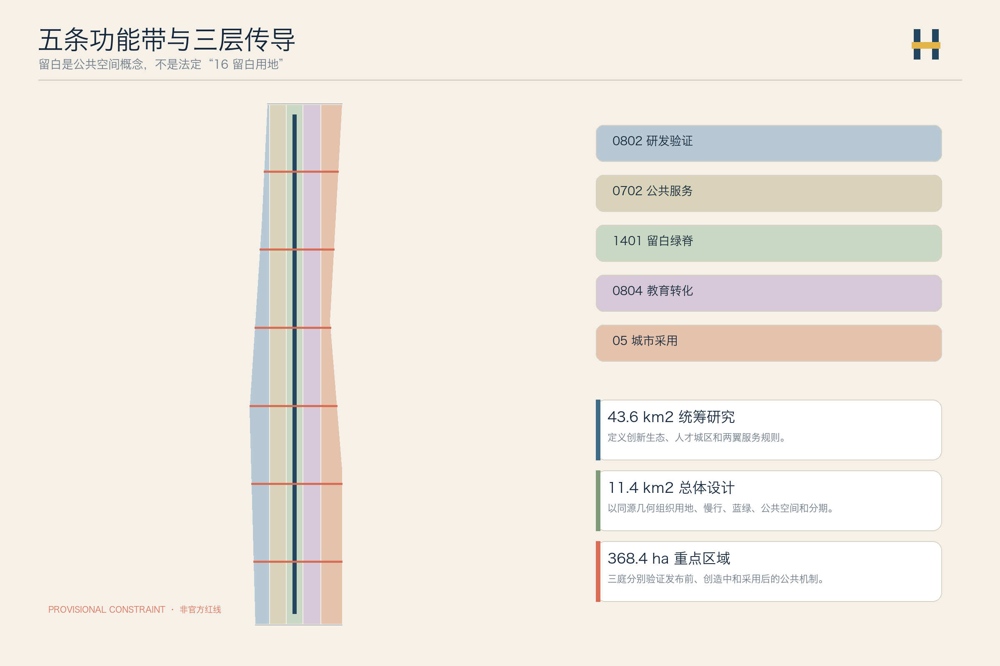
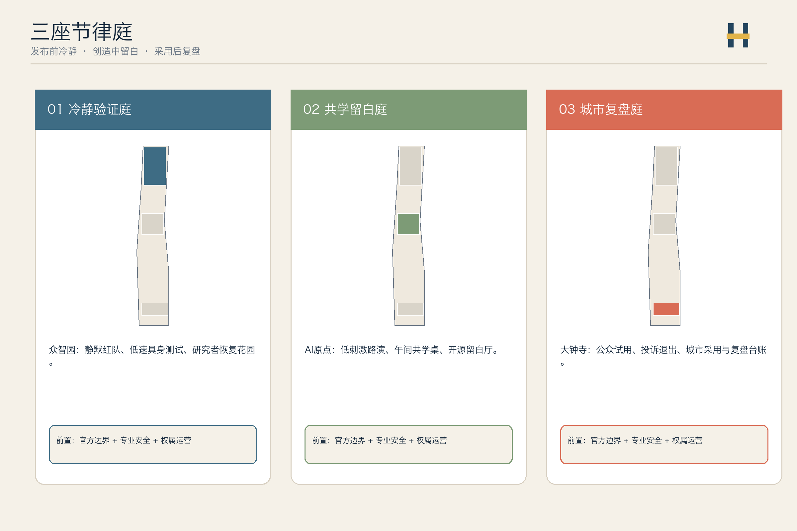
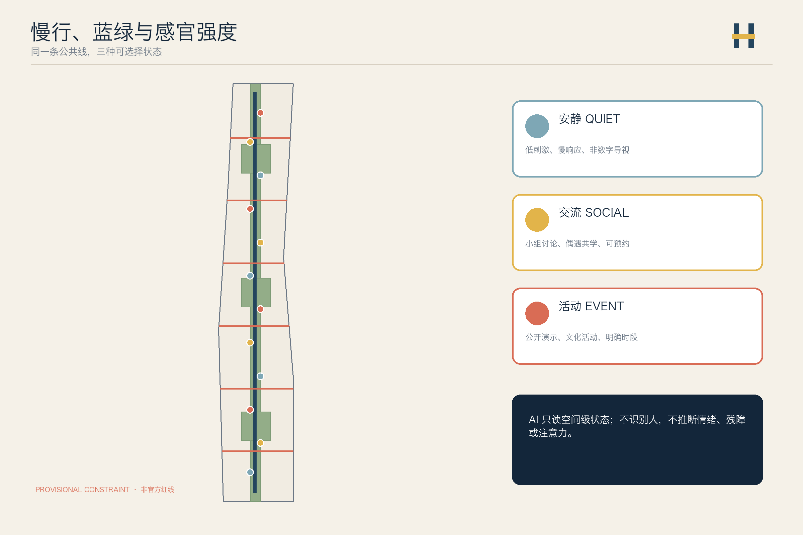
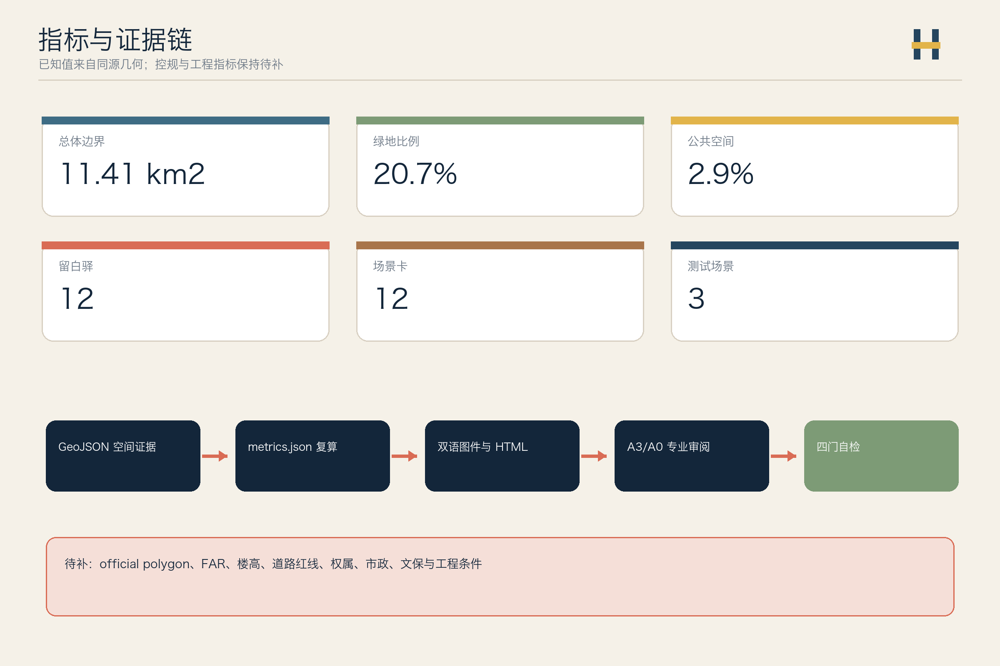

京张留白线 / THE PAUSE LINE — 面向感官选择与创新节律的 AI 城市设计
让算力持续运行，让城市允许人停下来：以一条慢行留白脊、三座节律庭、六条转换横廊和十二个留白驿，组织可选择安静、交流与活动强度的 AI 创新城区。
京张留白线 / THE PAUSE LINE
让算力持续运行，让城市允许人停下来。 “留白”在本方案中指可选择的低刺激、停驻与复盘空间，不是国土空间分类中的“16 留白用地”，也不是让城市停止创新。
设计依据与资料清单
本方案从一个城市设计判断出发：世界级 AI 创新城区不仅要提高研发与转化效率，还要让研究者、居民、服务人员和访客能自主选择安静、交流或活动的强度。京张遗址公园适合作为这种“创新节律”的公共骨架，但当前仓库没有官方精确红线、重点区 polygon、控规、建筑、权属和市政底数，因此所有落位都是可复算的概念建议 来源 来源 深度。
仓库 Issue #846 提供了一个必须直面的背景风险：临时总体边界与公开测绘的遗址公园和公告点名道路可能存在错位。方案不据此另造红线，也不把 OSM 升级为 formal 依据；所有图面把 provisional polygon 画成淡色虚线，只用它约束本次机器校验 来源 来源 空间数据。

三层范围工作框架
统筹研究范围讨论创新生态与人才城区的共同规则；总体设计范围组织一条留白慢行主线、三座节律庭、六条东西转换横廊和十二个留白驿；三处重点区分别验证“发布前冷静验证—创造中共学留白—采用后公共复盘”的完整链条 标准 深度 空间数据。
“一线三庭六横十二驿”不是新红线。用地以五条共享边界的纵向功能带表达研发、公共服务、绿脊、教育转化和城市采用；重点区仍采用仓库的三处 provisional constraint，官方 polygon 到位后必须整链重算 空间数据 空间数据 深度。

统筹研究范围产业与未来城市研究
“京张留白线 / THE PAUSE LINE”的品牌符号由两条平行铁路和中间一段呼吸缝组成：深轨蓝表示工程可信，苔绿表示公共生活，信号黄表示人工确认，暖铜表示百年京张。品牌不借用企业 Logo、人物肖像或受限字体；导视把“安静 / 交流 / 活动”三种空间状态同时用颜色、文字和触觉符号表达 来源 标准。
六个外部案例只用于比较机制，不转移指标或治理权限：Kendall Square 用于观察创新项目与公共审议的并置 来源；one-north 用于比较 work-live-play-learn 复合机制 来源；Smart Kalasatama 用于比较居民共创与短周期试验 来源；Barcelona Superblocks 用于比较街道空间从通行向停驻转化 来源；纽约 POPS 用于比较公共可达义务如何被看见和检查 来源；Toronto Quayside 用于比较公共利益和包容性公共空间的交付边界 来源。
五大功能被转译为一条可审计回路：众智园负责全栈技术与安全验证，AI 原点社区负责开源协作与人才共学，大钟寺负责城市采用与国际交流；中关村科技服务翼提供法律、资本、人才和知识产权服务，小月河场景赋能翼提供公共场景和居民反馈。每次 AI 场景从研发走向公共空间前，都要经过“安静评估—小范围交流—公开活动—复盘归档”四步，不以热度代替有效性 深度 标准。
总体设计范围城市更新与控规深度城市设计
用地层采用 0802 科研、0702 社区服务、1401 公园绿地、0804 教育和 05 商业服务五类合法代码完整覆盖临时边界。这里的“留白”是公共空间和运营概念，绝不冒充“16 留白用地”或法定用地调整 标准 空间数据 深度。
建筑层布置十八个“可适应更新载体”，统一采用“先核实保留、再适应性改造、最后才研究增建”的 R-A-I 方法。由于没有现状建筑、权属、容积率、楼高、文保和市政条件，图层不做具体拆除决定，也不把概念基底当成建设规模 空间数据 深度 深度。
城市更新优先改造地面接口：先做可移动座椅、遮阴、饮水、无障碍导视、安静时段和公开预约规则；再校核六条东西横廊与轨道接驳；最后才在正式数据齐备后深化建筑和工程。容积率、建筑高度、道路面积和总建筑面积保持待正式数据补齐 指标 指标 深度。
重点区域详细设计
三座节律庭不是同一种展示园，而是 AI 成熟链上的三个不同公共检查点 空间数据 空间数据 深度。
| 重点区 | 设计角色 | 空间动作 | 首批概念项目 | 深化前置条件 |
|---|---|---|---|---|
| 众智园“冷静验证庭” | 发布前验证 | 低刺激评审室、具身设备慢速测试环、清河绿色会谈界面 | 静默红队室、机器人可听意图测试、研究者恢复花园 | official polygon、安全、河道、道路、网络条件 |
| AI 原点“共学留白庭” | 创造中交流 | 校园—园区步行缝合、无预约共学桌、安静/讨论双模式空间 | 开源留白厅、跨学科午间桌、低刺激路演 | 校园权属、建筑现状、活动与消防条件 |
| 大钟寺“城市复盘庭” | 采用后复盘 | 站城等候空间、公众试用、投诉与退出窗口、文化活动 | 城市采用会、AI 服务复盘墙、夜间安静回家线 | 站点、道路、市政、商业和文保复核 |

三处朝圣与荣誉节点为“百年等候厅”“原点留白庭”“大钟复盘台”。它们展示问题、试验条件、失败记录、人工负责人和当前状态，不把投稿写成入选，不把试验写成落地，也不把企业宣传替代公共贡献。
AI 创新生态、人才画像与 AI+ 场景
六类画像是高强度研发人员、神经多样性使用者、周边居民与长者、服务与维护人员、学生与青年开发者、国际访客与活动组织者。画像只描述公开的空间需求；任何传感器都不得推断个人注意力、情绪、残障或心理状态 来源 空间数据 指标。
| # | 场景卡 | 空间与对象 | AI 作用 | 人工与权利边界 |
|---|---|---|---|---|
| 01 | 低刺激寻路 | 全线；感官敏感者、访客 | 按用户主动选择推荐安静/交流/活动路线 | 不推断诊断，不记录个人轨迹 |
| 02 | 公共座席状态 | 十二驿；居民、服务人员 | 只统计空间级空闲状态 | 不做人脸和个体停留分析 |
| 03 | 研究者恢复排班 | 众智园；研发团队 | 提醒团队会议与安静时段冲突 | 不读取健康数据，团队人工确认 |
| 04 | 机器人可听意图测试★ | 众智园；机器人团队、行人 | 测试非语音提示是否清楚 | 封闭低速、现场安全员可立即停止 |
| 05 | 无障碍多模态导视测试★ | 原点；视听行动差异用户 | 组合触觉、文字、灯光和声音提示 | 当事人参与评审，专业顾问放行 |
| 06 | 隐私保持声环境测试★ | 原点；公共空间运营者 | 仅提取匿名声级/频段统计 | 不保存语音，不做说话人识别 |
| 07 | 午间跨学科偶遇桌 | 原点；师生、开发者 | 按公开主题匹配活动桌 | 明示自愿，不做人才评分 |
| 08 | 公共服务低刺激模式 | 社区服务点；长者、家庭 | 简化界面、延长响应时间 | 人工窗口长期保留 |
| 09 | 城市采用会 | 大钟寺；企业、居民 | 汇总支持、反对和分歧主题 | 原始意见可查，人工主持结论 |
| 10 | 夜间安静回家线 | 大钟寺—社区；夜行者 | 汇总公开照明和开放信息 | 不实时追踪个人，不作治安结论 |
| 11 | 京张等候史导览 | 遗址公共空间；访客 | 溯源讲述车站、等候与创新史 | 史实和版权人工校核 |
| 12 | 全球城市节律周 | 全线；国际团队、社区 | 多语议程与场地冲突提醒 | 活动、安保、版权逐项审批 |
带 ★ 的三项为产业测试验证场景；十二张场景卡、三项测试和十二个空间节点分别由 指标、指标、指标 复核。AI 的作用是减少空间冲突和提高可选择性，不是争夺注意力或自动判断谁“需要休息”。
用地、建筑规模与拆改留方案
五条功能带的面积从同一临时边界拓扑分割，完整覆盖且无重叠：科研与验证、社区服务、绿脊、教育转化、城市采用。它们表达功能关系，不是已批用地比例 空间数据 深度 来源。
| 概念功能带 | 代码 | 可复算面积证据 | 使用边界 |
|---|---|---|---|
| 研发与受控验证带 | 0802 | 指标 | 不承诺企业或建设量 |
| 公共服务与共学带 | 0702 | 指标 | 不替代公共设施专项规划 |
| 京张留白绿脊 | 1401 | 指标 | 不等于 official 公园红线 |
| 教育转化与人才交流带 | 0804 | 指标 | 校园开放需权属和安全确认 |
| 城市采用与复盘带 | 05 | 指标 | 商业业态和比例待控规确认 |
建筑基底面积和概念建筑密度只用于检查设计载体是否可审查 指标 指标。总建筑面积、容积率和楼高继续保持未知 指标 深度。
交通、轨道、市政与公共服务设施
交通结构由一条南北留白慢行主线和六条东西转换横廊组成。横廊把园区、校园、社区和站点的概念联系接入主线，并把空间状态从安静逐步转换为交流和活动；所有线位均待道路红线、轨道接口、流量和无障碍现场核查 空间数据 指标 深度。
六条横廊数量可从道路图层复核 指标。道路面积和道路比例不因概念线位而伪造，继续列为未知 指标 指标。
市政与数字设施采用“空间级状态、边缘计算、最小保存、人工确认”四条规则。座席、声环境、照明和活动容量只能产生聚合状态；能源、排水、消防、通信和算力容量必须等待正式底数 空间数据 深度 来源。

蓝绿空间、公共空间与城市风貌
留白绿脊和三座节律庭构成公共空间主骨架。十二个留白驿按“安静 / 交流 / 活动”三种模式循环布置，每个驿都同时提供非数字导视、可坐可倚界面、轮椅与推车停靠、遮阴饮水和人工求助点；传感器只服务空间运维，不识别人 空间数据 空间数据 深度。
绿地和公共空间面积来自各自图层的 union，比例只是本次概念方案读数，不是法定绿地率或公共空间指标 指标 指标 指标。
城市风貌从铁路的“轨、站、等候、信号”提取语法：连续深蓝双线是公共承诺，暖铜短线记录历史，信号黄表示需要人工确认，苔绿节点表示可停驻的公共生活。建筑色彩、体量和高度待正式控制条件确认，本方案只提出地面界面和导视方向 标准 指标。
更新项目清单、实施政策与分期计划
| 项目 | 类型 | 先行方式 | 放大前闸门 |
|---|---|---|---|
| P01 留白导视样段 | 导视/无障碍 | 三种强度的文字、色彩、触觉原型 | 无障碍、版权、文保复核 |
| P02 十二留白驿走查 | 公共空间 | 现场座席、遮阴、噪声和照明审计 | official 边界、设施底数 |
| P03 冷静验证庭 | 产业验证 | 隔离评审室与封闭慢速测试 | 安全负责人、网络与场地许可 |
| P04 共学留白庭 | 教育/人才 | 午间共学桌和低刺激路演 | 校园权属、消防、活动许可 |
| P05 城市复盘庭 | 城市采用 | 公开试用、投诉、退出和复盘台账 | 运营主体、申诉与维护机制 |
| P06 夜间安静回家线 | 慢行/照明 | 公开信息走查与临时导视 | 交通、照明、治安专业复核 |
| P07 百年等候史 | 文化 | 授权口述、档案和可移动展陈 | 史实、版权、文保复核 |
| P08 全球城市节律周 | 长期运营 | 小规模公共议程原型 | 审批、安全、国际传播与预算 |
实施分为“先测节律、再缝合空间、后深化建设”三期。每期都以官方资料、权利影响、专业安全和公众复盘为放大闸门；三期面积只证明图层覆盖，不代表政府时序 空间数据 深度 深度。
三期空间读数分别由 指标、指标、指标 复核。年度运营建议采用“春季问题征集—夏季受控试验—秋季城市采用—冬季公开复盘”，但活动名称、日期、资金和主办方均未确定。
指标体系、面积复算与合规矩阵
提交边界面积由临时 polygon 复算，并与公告约 11.4 平方公里分开记录 指标 指标。三处重点区的数量与面积分别由 指标、指标、指标 支撑；第三处面积另见 指标。

compliance_matrix.json 覆盖公告 1.3、1.4、1.5 与 agent.1—agent.6；standard_matrix.json 覆盖强制专业依据；design_depth_matrix.json 把现状、用地、建筑、交通、市政、蓝绿、重点区、项目、分期、指标和风险连接到图层与图纸 深度 标准。
已知指标只描述本包同源数据，未知指标保持空值并说明解除条件。visual/index.html 的核心数值与 metrics.json 使用相同数据标记，A3/A0 和五张图均由本投稿的几何、指标和矩阵派生。
风险、版权与合规说明
最大空间风险是 provisional boundary 的精度和位置争议；最大治理风险是把感官友好异化为对个人注意力、情绪或残障的自动推断。前者通过淡化边界、整链复算触发器和 Issue #846 披露处理，后者通过“不推断个人状态、只读空间级数据、始终保留人工路径”处理 来源 深度 空间数据。
本方案不声称官方批准、审定控规、最终土地权属、最终建设规模、工程可行性或确定活动。尚缺官方来源的建筑设计深度参照只作为缺口登记，不作为 formal 权威 标准 来源。
文本、几何、图表、HTML 和 PDF 由 Codex 为本投稿原创生成；只引用公开网页和仓库清权资料，没有使用商业地图瓦片、新闻图片、企业 Logo、人物肖像、远程字体、CDN 或跟踪代码。许可、访问日期、用途和限制见 sources.json 与 report/copyright_statement.md。
参考资料
- 项目公告、Agent 任务书、场地包和公开资料登记表 来源 来源 来源
- 临时边界与三处重点区 来源 来源
- 外部案例仅作机制比较，受
A-CASE-TRANSFER-001限制 来源 来源 来源 - 公共空间与城市采用案例 来源 来源 来源